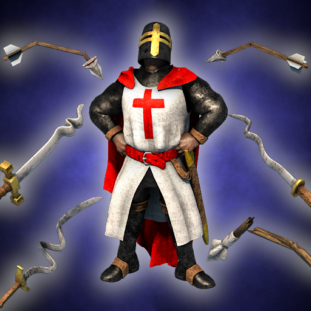
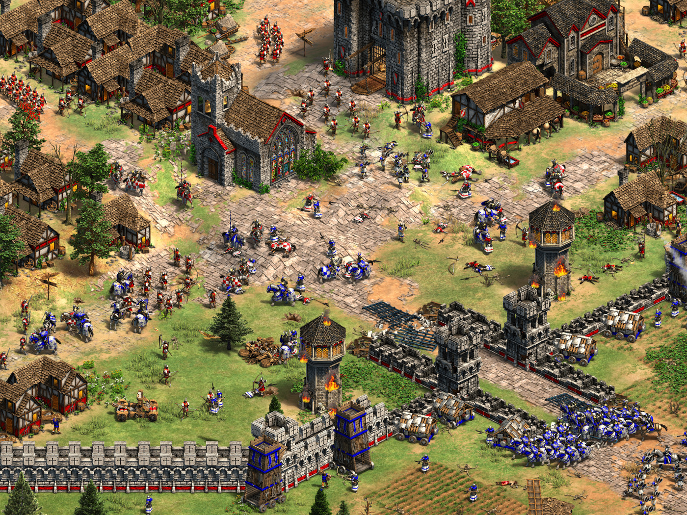

About
Age of Empires II is a real-time strategy computer game set in the Middle Ages. Developed by Ensemble Studios and published by Microsoft, it is the second main title of the Age of Empires series and was released in 1999.
Gameplay
The player has control over a society and guides them through four different time periods or "ages". The game begins in the Dark Age, where very few buildings and units are available. After a short time when requirements are met, the user gains the ability to advance their civilization beginning with the Feudal Age, where more upgrades, buildings, and units become available. The next age is the Castle Age, in which the powerful Castle may be built, and used to produce powerful units including the unique unit of each civilization. Finally, the user can reach the Imperial Age, which is reminiscent of the early years of the Renaissance. Once the user has reached the Imperial Age, they gain access to all the upgrades, units, and buildings that may be built and researched for their specific civilization.
The player directly controls Villagers, which are the most important economic unit in the game. The player has the power to order them to move or attack (all units except for Trade Carts, Transport Ships and Trade Cogs), construct new buildings, gather necessary resources (Villager units), and perform a range of other tasks, such as repair damaged buildings or garrison inside Castle or Town Center for safety.
While the isometric rendered landscape features elevations and terrain similar its predecessor, several improvements were made. Besides a more realistic rendering of object size, the map features a more varied terrain with additional texturing options. In the scenario editor, desert is replaced with dirt and has three different variations, based on the number it is given. Elevation texturing remains unchanged with the exception of mountains which now appears in the game. Units that attack from cliffs or a higher elevation still receives an attack bonus but units that attack on lower elevations or below a cliff now have a damage penalty instead of dealing normal damage.
Like its predecessor, there are four types of resources: wood, food, gold, and stone, all of which are required to advance through the ages, research new technologies, erecting structures and training units. Wood is used for building and repairing most structures, used to create Farms to provide food resources, and the production of ships, siege engines, and range units such as the various types of archers, and the skirmisher units. Stone is used for the construction of Castles, towers, Stone Walls, and after the first patch, used in the construction of Town Centers as well. Gold and food are used for constructing units and researching technologies. In most cases, these resources can be traded for one another at the Market, but with a small price: tariffs must be paid. Often, one of the difficulties of most scenarios or campaigns is that it usually has a small supply of a resource, often gold or stone which is usually controlled by the enemy, forcing players to exchange resources at the Market.